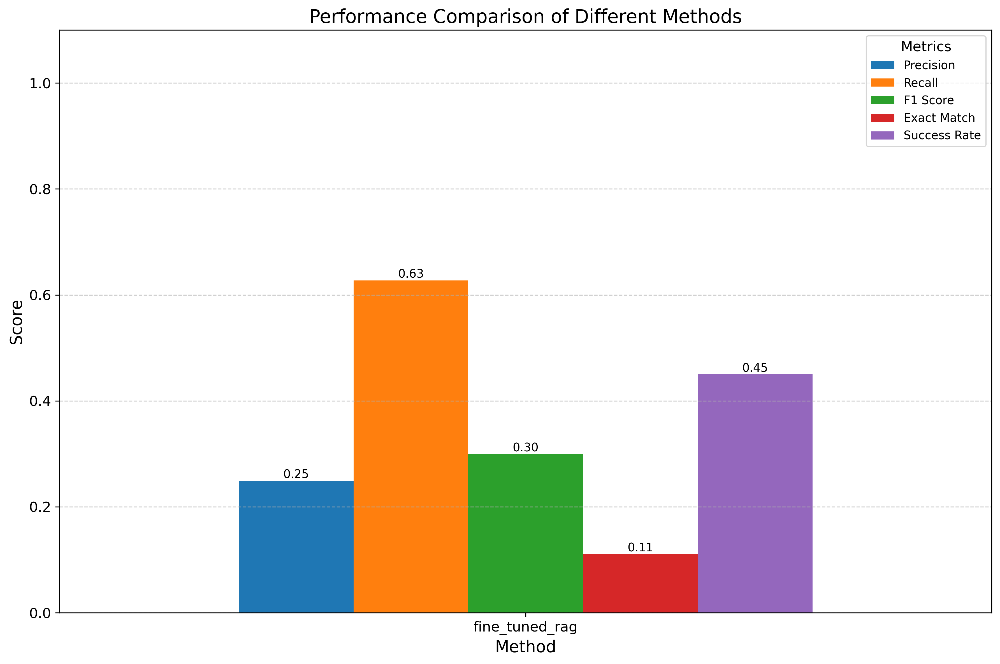
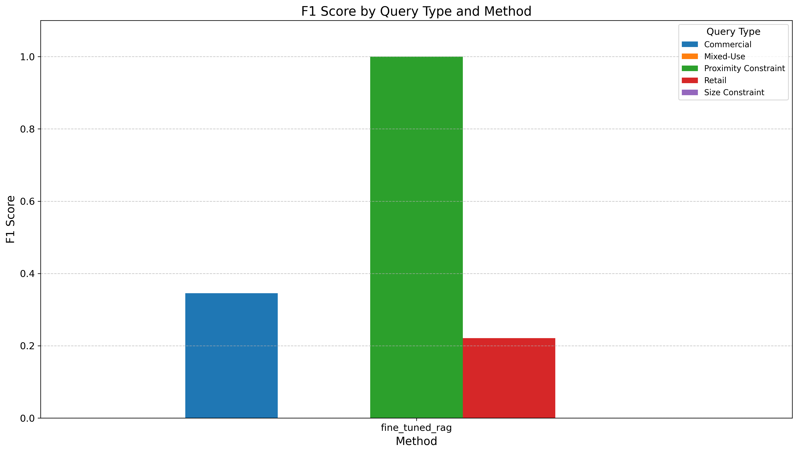
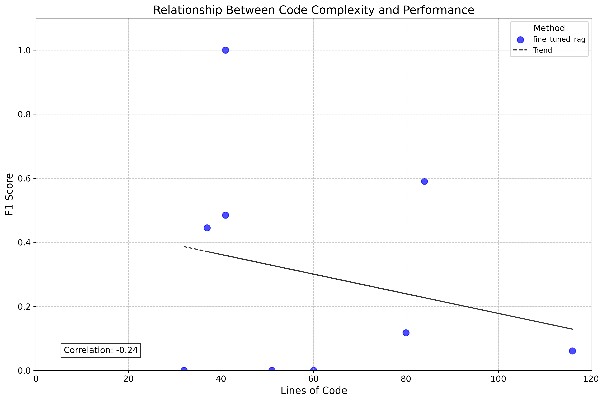

Site Selection Method Evaluation Report
Performance Summary
| Method |
Success Rate |
Precision |
Recall |
F1 Score |
Exact Match |
| fine_tuned |
10.00% |
100.00% |
100.00% |
100.00% |
100.00% |
Performance Visualizations
Method Comparison

Performance by Query Type

Code Complexity vs. Performance

Conclusions
Based on the evaluation results, the following conclusions can be drawn:
- The best-performing method is fine_tuned with an F1 score of 100.00%.
- The methods perform best on Commercial queries with an average F1 score of 100.00%.
- The highest variability in performance is seen in nan queries with a standard deviation of nan%.